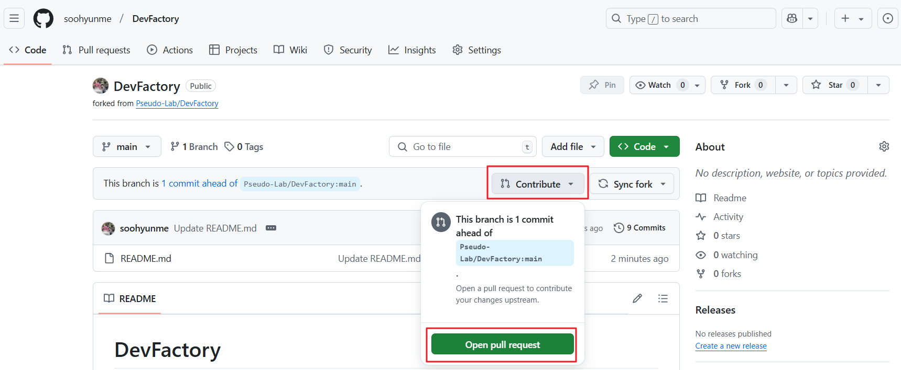

Github 파일 편집기로 작업하기 🚀#
Pull Request(PR) 소개#
Pull Request(PR) 는 오픈소스 프로젝트나 조직의 저장소에 직접적인 수정 권한이 없는 사용자가 변경 사항을 제안하고 반영할 수 있도록 하는 협업 도구입니다.
🚀 PR을 사용하는 주요 이유:
저장소에 직접적인 쓰기 권한이 없는 경우에도 기여 가능
코드 리뷰를 통해 더 나은 품질의 코드 유지
여러 기여자가 같은 프로젝트에서 안전하게 협업 가능
보통 팀 프로젝트나 오픈소스 프로젝트에서는 직접 코드 변경이 불가능하기 때문에, PR을 생성하고 관리자의 검토 후 병합(merge)하는 방식으로 기여합니다.
📖 이 가이드에서는 스터디 리포지토리에 프로필을 업데이트하는 과정을 통해 PR 사용법을 익혀보겠습니다.
PR을 활용해 스터디 리포지토리 프로필 업데이트 하기#
GitHub에서는 저장소에 직접적인 수정 권한이 없는 경우, 변경 사항을 적용하려면 Pull Request(PR) 를 통해 기여해야 합니다. 따라서, 스터디 리포지토리에 수정 권한이 없다면 먼저 자신의 GitHub 계정으로 Fork(포크) 해야 합니다.
1️⃣ 저장소 포크(Fork)하기#
GitHub에서 본인의 스터디 저장소로 이동합니다.
본 가이드에서는 DevFactory 리포지토리를 예시로 사용합니다.본인이 속한 스터디 저장소에서 오른쪽 상단의 Fork 버튼을 클릭합니다.
Create fork 버튼을 클릭합니다.

2️⃣ 프로필 내용 추가하기#
포크한 저장소의 최상위 디렉터리에서 README.md 파일을 열고, 프로필에 해당하는 영역을 찾습니다.
📌 포크가 완료된 저장소는 본인 Github 저장소에 존재합니다.

프로필 코드 한줄을 복사하여 본인 프로필에 맞게 내용을 수정하시면 됩니다.

내용 변경 후 Commit changes… 버튼을 클릭합니다.

Badge 추가하기(Option)
추가적인 Badge(아이콘)를 생성하려면 Shields.io를 참고하세요.
이 사이트에서 다양한 스타일의 배지를 만들고, Markdown 형식으로 쉽게 적용할 수 있습니다.
3️⃣ 변경 사항 스테이징 및 커밋 + 변경 사항을 GitHub에 푸시하기#
아래와 같이 commit 메시지와 설명을 작성하고, Commit changes 버튼을 클릭합니다.

커밋 및 Push가 완료되면, Fork한 저장소에서 다음과 같이 내용이 업데이트 됩니다.

4️⃣ Pull Request 생성#
현재 변경 사항은 포크한 저장소에만 반영된 상태이므로, 원본 저장소에 적용하려면 PR을 생성해야 합니다.
포크한 저장소에서 Contribute 버튼을 클릭한 후, Open pull request 버튼 클릭을 선택하여 PR을 생성합니다.
변경사항에 대한 내용을 간략히 작성한 뒤 Create pull request 버튼을 클릭합니다.

5️⃣ PR 리뷰 및 업데이트#
PR이 생성되면 팀원들이 변경된 내용을 검토하고, 문제가 없으면 승인합니다.

6️⃣ Pull Request 병합#
PR이 승인되면 다음 단계로 병합할 수 있습니다.
GitHub에서 Merge Pull Request 버튼 클릭.
더 이상 필요하지 않은 경우 브랜치를 삭제합니다.
이제 프로필 업데이트가 완료되었습니다!